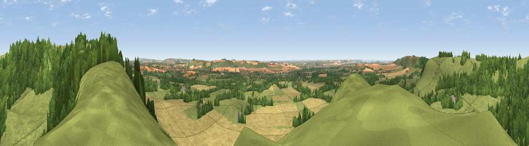

Giant's Grave
#5492 in England · top 6% of its area beats it · near OareWhere it is
The exact computed spot (SU 16700 63275). Click the marker for map links.
The view, rendered

A 360° render of this exact spot computed from the terrain model, tree cover and land cover — summer colours, afternoon light, calibrated against photographs of famous viewpoints. Real trees, hedges and buildings will differ in detail.
The panorama
Grey silhouette: terrain skyline in each direction (720 bearings, Earth curvature and refraction included). Dashed green: skyline with trees (+15 m) and buildings (+8 m) as obstacles. Blue strip: how far the ground is visible on each bearing.
Where the view opens
Wedge length = distance to the farthest visible ground on that bearing (vegetation-aware). Rings at 10, 25 and 50 km.
What fills the view
49% grassland · 28% cropland · 23% woodland ·
Angular shares of the visible panorama (visual magnitude), not map area. Landscape diversity 0.47 (0–1 Shannon).
Key numbers
More beautiful places nearby
The staircase of upgrades: each row has a higher view potential than everything closer. Driving times are estimates from straight-line distance, calibrated against real road routing — check an actual route before setting out.
| Place | Direction | Drive | Score |
|---|---|---|---|
| Viewpoint near Oare | ENE · 1 km | ~2 min | 72.9 |
| Martinsell viewpoint | ENE · 1 km | ~4 min | 77.3 |
| Viewpoint near Berwick St John | SSW · 49 km | ~70 min | 78.2 |
| Viewpoint near Stinchcombe | NW · 55 km | ~77 min | 80.5 |
| Nottingham Hill | NNW · 68 km | ~91 min | 80.9 |
| Beacon Hill | SE · 78 km | ~102 min | 85.8 |
| Mottistone Down | SSE · 82 km | ~106 min | 87.2 |
| Rings Hill | SSW · 88 km | ~112 min | 87.5 |
51.36829, -1.76150 · source: osm peak · position refined by local search. Computed location — check access rights before visiting.